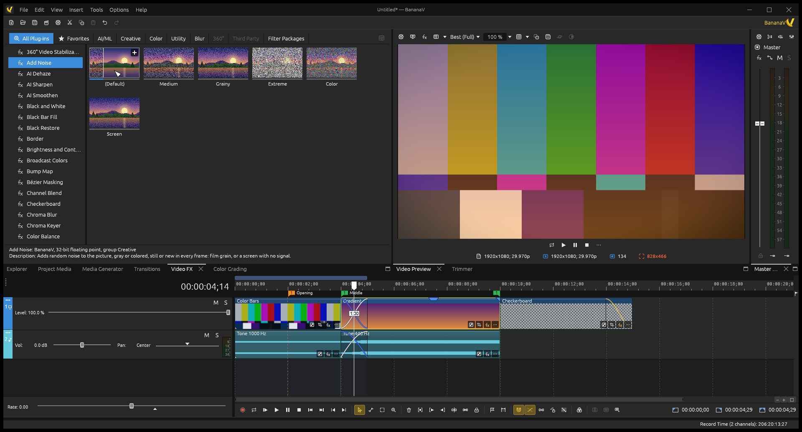
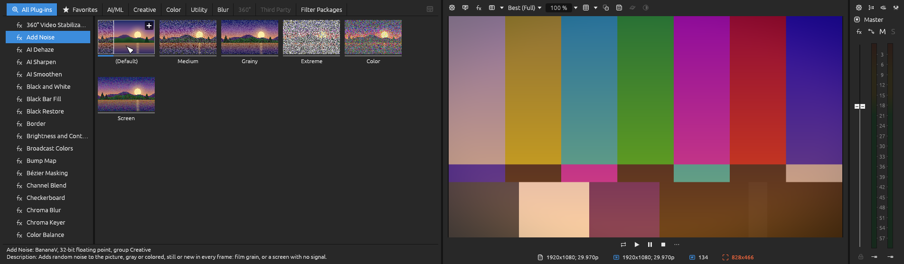
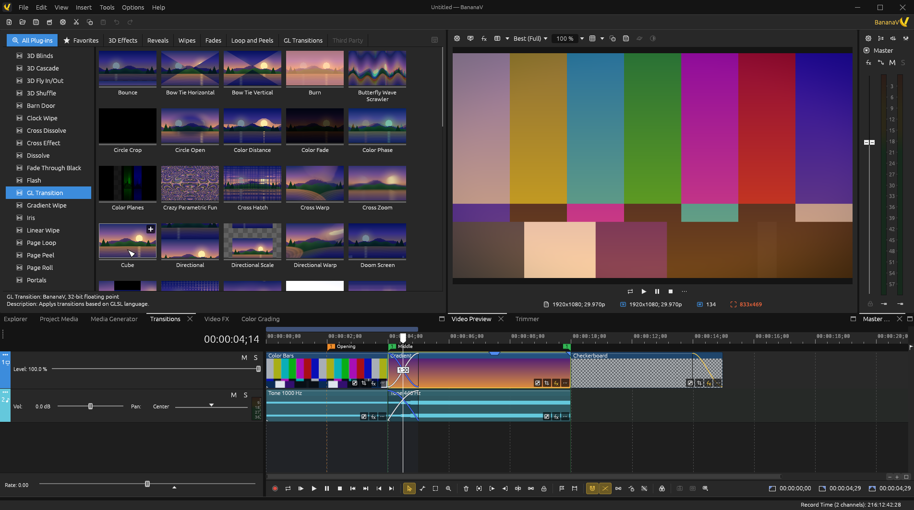
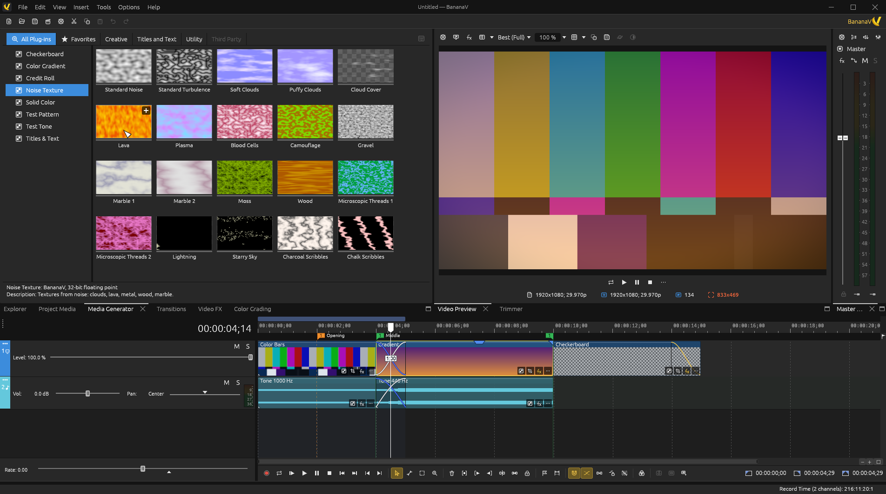
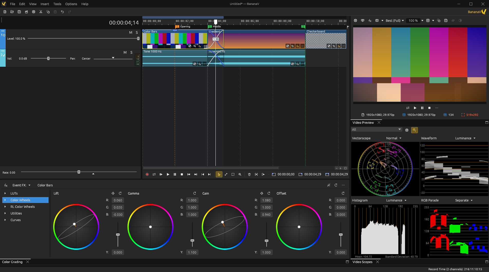
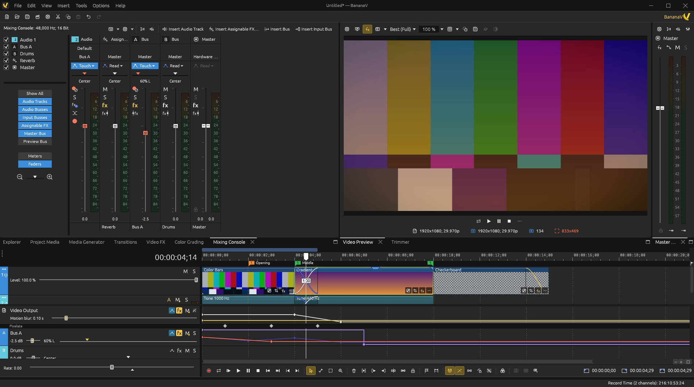
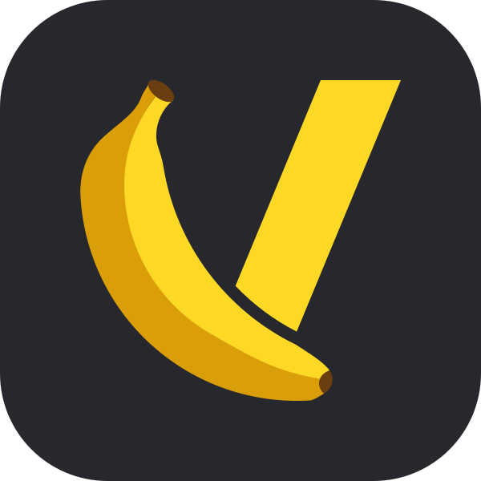

BananaV 0.3.0, on the Mac too
BananaV comes to macOS as an experimental version, with smooth 4K playback, VST 2 and VST 3 plug-ins, a Transform mode on the preview, windows that dock where you drop them and 18 more languages. Read what changed.
A free and open-source video editor for Windows, macOS and Linux, written from scratch in Rust. Everything you need to cut, mix, color and finish your videos, in one fast timeline.

What's new in 0.3.0
macOS as an experimental version, smooth 4K playback, VST plug-ins, a Transform mode and windows where you want them.
One app for Apple's chips and Intel Macs, macOS 11 and later. It is built and started on GitHub's Macs but not yet tried on ours: tell us how it goes.
A 4K 59.94 project at Best (Full) plays every frame, heavy 4K parts no longer stall when they start, and picture and sound start together.
Their editors inside the FX window, 32-bit ones in a bridge of their own, and each one tried apart, so a crash never takes BananaV down.
Drag the picture to move, resize and turn it, with every control of the event in the Transform window beside the Explorer.
Drop a window beside another or on a side, float it on another monitor, and make the interface darker or lighter.
The interface partly translated into 18 more languages, from Chinese to Swedish, and BananaV tells you when a new version is out.
Features
BananaV is built around a track-based timeline where everything is one drag or one key away. Its compositing, audio mixing and color management are its own code, made to be fast and exact.
Events on video and audio tracks, ripple and slip edits, crossfades by overlapping, takes, multicamera editing and a keyboard for everything.
Animate any setting with smooth or Bézier curves, draw volume, pan and effect envelopes on the tracks, and record automation as you play.
More than a hundred video effects, transitions and generators on media, events, tracks and the output, with presets you can preview. Add OpenFX plug-ins too.
32-bit floating point compositing, ACES 1.3 color management, a color grading panel with wheels, curves and LUTs, and video scopes.
51 audio effects of its own, a mixing console with busses and effects chains, VST 2 and VST 3 plug-ins, 5.1 surround panning, loudness meters and auto ducking.
Compositing on the GPU, hardware decoding, and hardware encoders when your computer has them. Proxies and prerendering for heavy projects.
.veg projects, OpenTimelineIO, EDL and XML timelines in and out, closed captions and subtitles, and renders to MP4, MOV, ProRes and more.
The interface speaks English and Brazilian Portuguese, with more languages to come from the community.
Take a tour
Every picture here is BananaV as it is today, drawn by its own screen tests.





Download
BananaV 0.3.0 is out for Windows and Linux, and for macOS as an experimental version. Its source code is on GitHub.
Windows 10 and 11. An installer: open it and follow the steps, no administrator password needed. It is not signed yet: if Windows warns you, choose More info, then Run anyway.
The installer is for Intel and AMD processors, most computers. ARM64 is for Snapdragon and other ARM ones.
An AppImage for any distribution since 2022: make the file executable and run it. No installation needed.
x64 for Intel and AMD processors, ARM64 for ARM ones.
macOS 11 or later, one app for Apple's chips and Intel Macs: open the disk image and drag BananaV into Applications. It is not signed yet: if macOS stops it, open it anyway from System Settings › Privacy & Security.
Experimental: built and started on GitHub's Macs, not yet tried on ours. Tell us on Discord what works and what doesn't.
Build it yourself with Rust's cargo: the source code is on GitHub, under the GPL.
Build from sourceSupport BananaV
No ads, no subscriptions, no paywalled features. BananaV is funded by people like you: if you enjoy it, please consider a donation. Every contribution, big or small, keeps the project going.
Can't donate? Starring the project on GitHub and telling your friends helps too.
Get involved
BananaV belongs to its community. Every bug report, translation, tutorial and line of code makes it better for everyone.
Chat with editors and developers, ask for help and share what you made on our Discord server.
Found something broken? Tell us how to make it happen and we will hunt it down.
BananaV is written in Rust, and its code is on GitHub. Read the contributing guide, say hello on Discord, and we will help you get started.
Help BananaV speak your language. Every interface text can be translated.
Make tutorials, share your workflow and help newcomers find their way.
Donations keep development going and BananaV free for everyone.
News
BananaV comes to macOS as an experimental version, with smooth 4K playback, VST 2 and VST 3 plug-ins, a Transform mode on the preview, windows that dock where you drop them and 18 more languages. Read what changed.
51 audio effects, compatibility with .veg projects, color correction with LUTs, a rebuilt Pan/Crop and smooth playback, now with an installer for Windows. Read what changed.
The second test build brings DVD authoring, motion tracking and stabilization, 3D compositing, studio audio and about a hundred effects and transitions remade. And BananaV's source code is now public on GitHub. Read what changed.
The first build of BananaV is out for Windows and Linux, x64 and ARM64: a very early test build to try the editor and tell us what breaks.
BananaV is released under the GNU General Public License, version 3 or later, with community guidelines for everyone who wants to take part.

It's free and always will be. If it helps you, a small donation keeps it going.